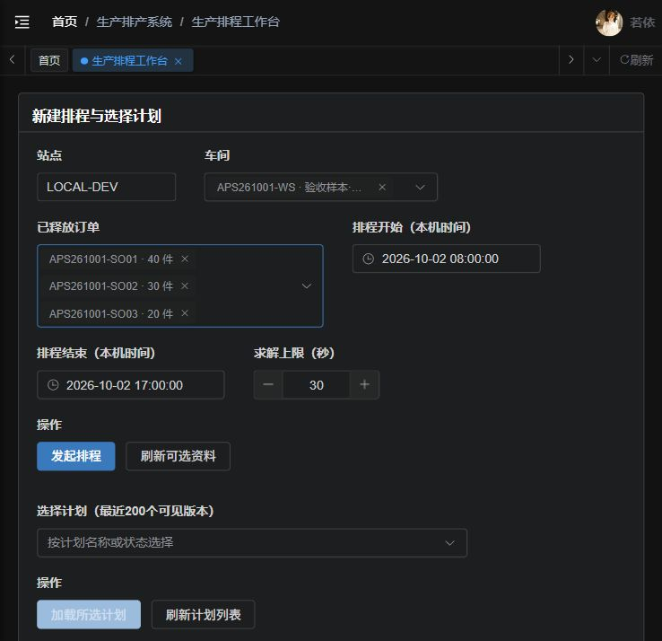
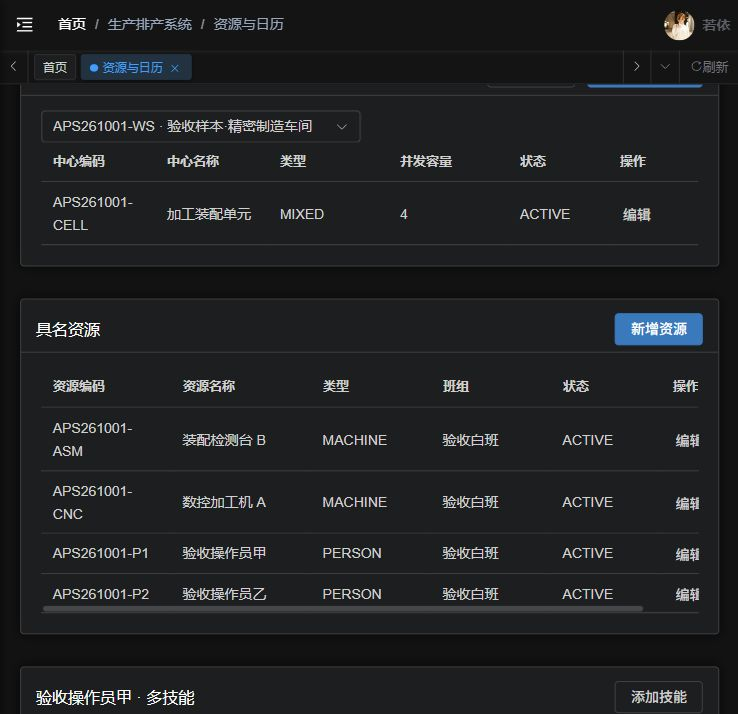
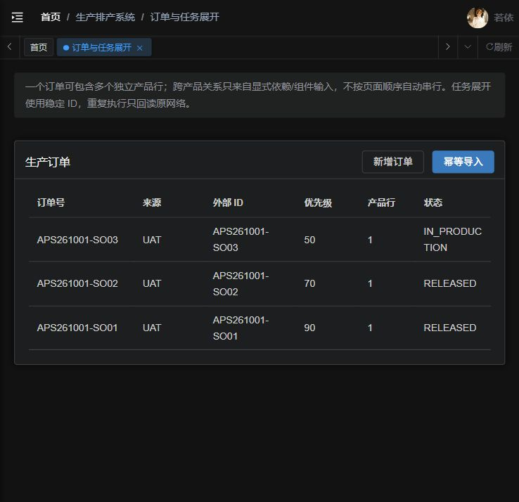
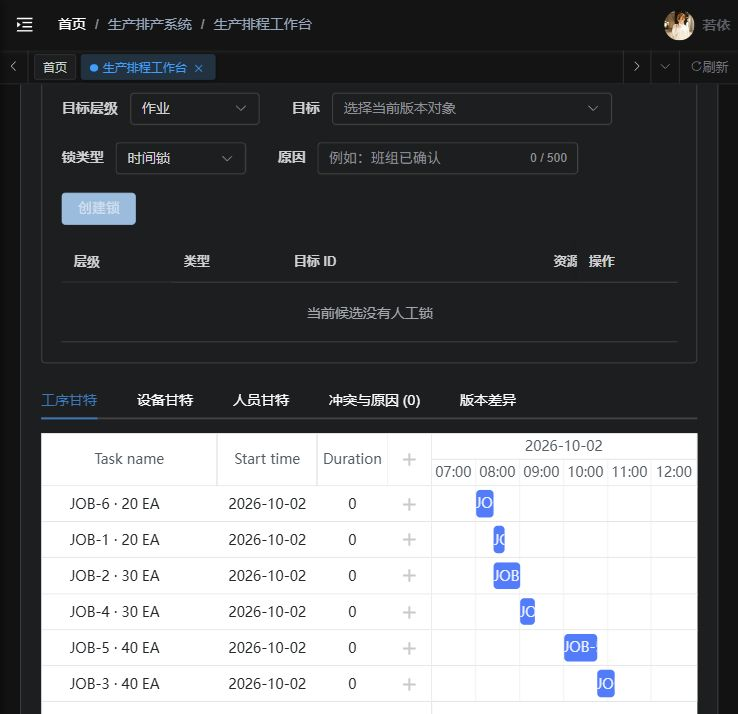
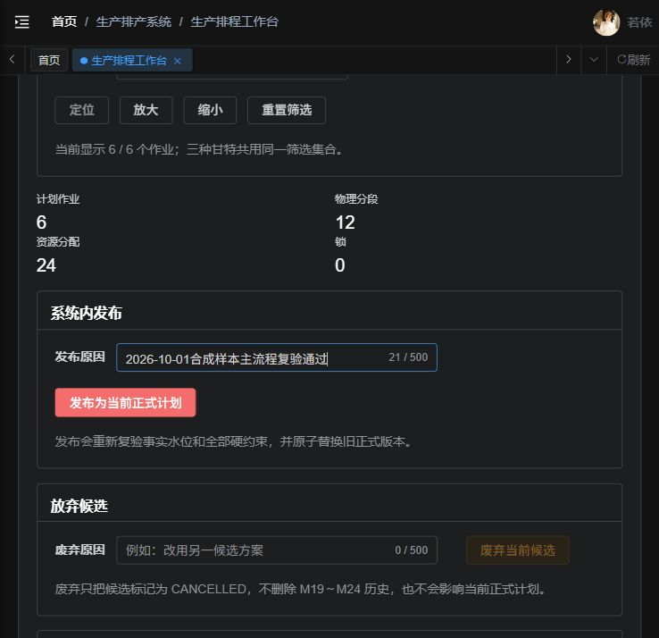
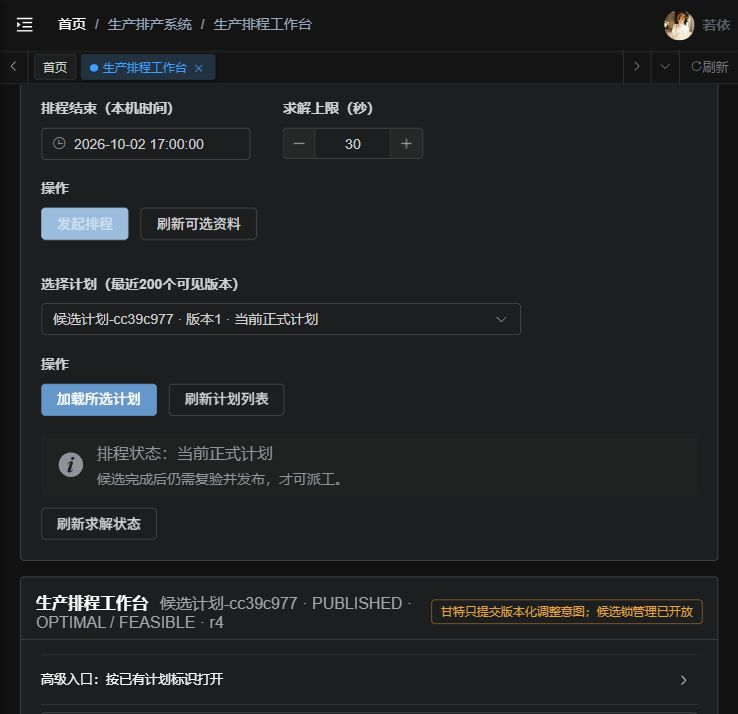
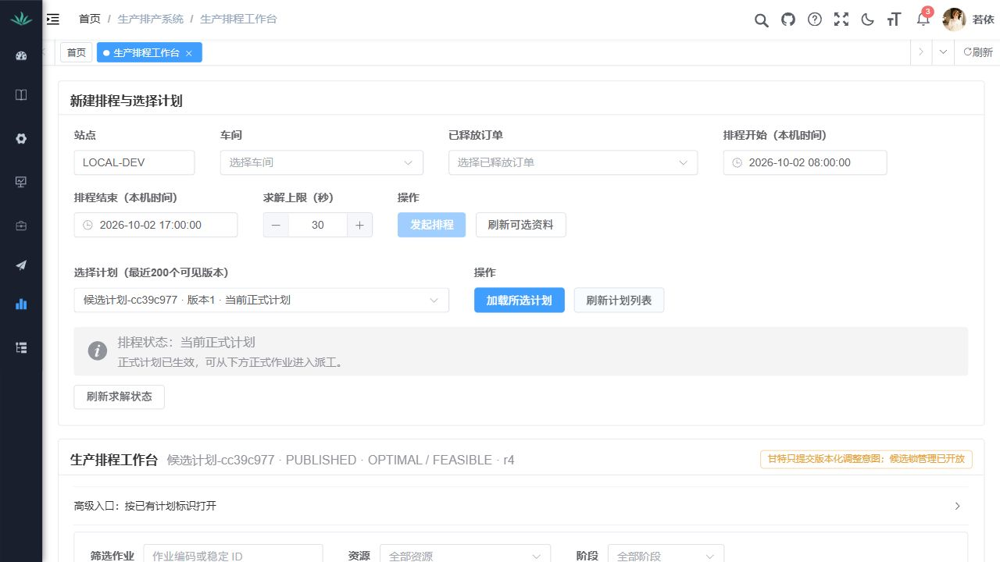
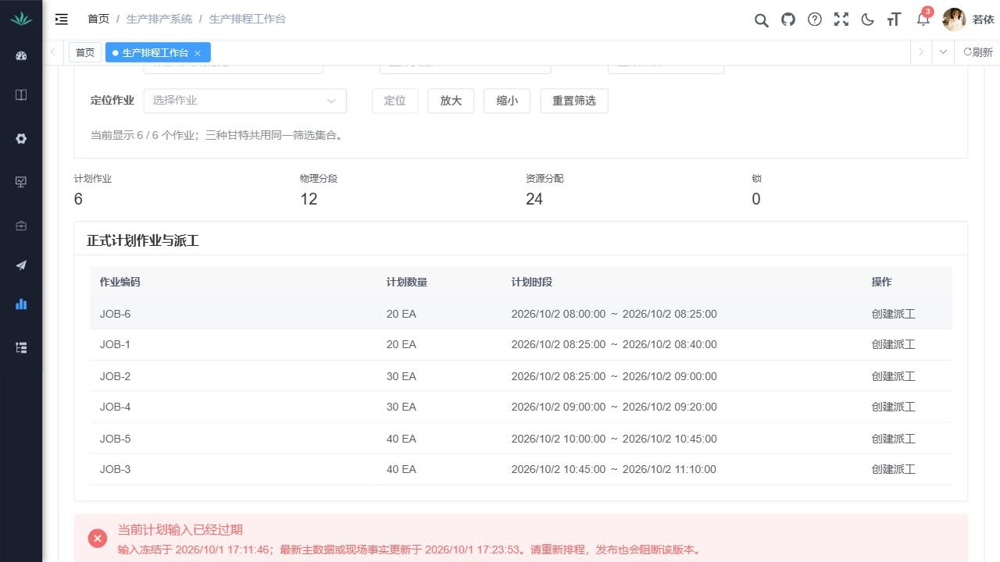

生产排产主流程衔接复验报告
2026-10-01 · 本机合成样本 · 已批准最小衔接
本轮六项页面业务检查通过。
名称选择 → 发起排程 → 候选 → 发布 → 正式作业派工 → 报工成员选择已走通。用户接受仍待确认，真实业务试点尚未完成。
前提、步骤和独立预期在操作前保存于验收清单。实际样本为三单90EA，6任务、3依赖。独立Worker完成求解，本轮只更新APS专属API副本。测试执行单最终暂停，活动占用为零。
1. 名称目录与数据就绪 通过
- 规则来源
- 页面与字段设计方案0.2.1第12节、任务清单第25节、主流程验收清单
- 前提
- 现有接口准备带APS261001前缀的合成样本。
- 执行步骤
- 核对资源、订单页面；工作台打开车间和已释放订单选择。
- 独立预期
- 1车间、4资源、2路线、3订单共90EA，6任务、3依赖；业务名称可选择。
- 实际结果
- 数量符合预期。发起前3单均已释放，开工后SO03进入IN_PRODUCTION；订单截图记录开工后状态。
数据依据：接口回执.json、候选数据.json
查看逐张回读的实际页面截图
01-名称选择与排程窗口.png
10-合成资源目录.png
11-订单实际状态.png
2. 从订单和车间发起排程 通过
- 规则来源
- 页面与字段设计方案0.2.1第12节、任务清单第25节、主流程验收清单
- 前提
- 选择3单和1车间，明日08:00至17:00；独立Worker运行。
- 执行步骤
- 点击发起排程，等待页面求解终态自动加载。
- 独立预期
- 不输入UUID，生成一个请求及候选，状态可读。
- 实际结果
- 请求由独立Worker完成；候选为FEASIBLE，求解返回OPTIMAL；只生成1个计划。
数据依据：候选数据.json
查看逐张回读的实际页面截图
01-名称选择与排程窗口.png02-候选甘特.png
03-候选状态与发布前.png
3. 候选可读与复验 通过
- 规则来源
- 页面与字段设计方案0.2.1第12节、任务清单第25节、主流程验收清单
- 前提
- 完成候选，预期时长和日历在操作前定义。
- 执行步骤
- 查看甘特，按独立时长、工序依赖、资源窗口和容量核对；发布时执行原后台复验。
- 独立预期
- 6作业、12阶段、24分配，各工序90EA，符合日历且无资源重叠。
- 实际结果
- 89个数据断言符合预期；发布复验成功。该断言数单列，不作为业务通过项数。
数据依据：独立排程核对.json、候选数据.json、发布数据.json
查看逐张回读的实际页面截图
02-候选甘特.png03-候选状态与发布前.png4. 发布并恢复正式计划 通过
- 规则来源
- 页面与字段设计方案0.2.1第12节、任务清单第25节、主流程验收清单
- 前提
- 可行候选，填写合成验收发布原因。
- 执行步骤
- 发布，刷新列表，按名称重新选择并加载。
- 独立预期
- 唯一当前正式版PUBLISHED，显示正式作业；顶部状态同步。
- 实际结果
- 唯一当前正式版已生效；六个作业有派工入口；顶部正式状态已修正并回读。最后一张列表图在开工/暂停后采集，现有事实水位提醒输入已过期，计划仍为PUBLISHED；本轮没有执行重排。
数据依据：发布数据.json、派工与测试结束SQL.log
查看逐张回读的实际页面截图
04-正式计划选择.png
13-正式状态与派工入口.png
14-正式作业派工列表.png
原失败和修复后的复验
技术验证（独立计数）
技术限制与检查过程中的修正
- 首次Maven参数引用错误已保留命令失败日志，修正引用后定向构建通过。
- 新增组件测试首次错误地从选择控件可见文本读取传送到外层的选项；改用实际选项组件断言后2项通过；原27项通过。
- 当前窗口准备首次使用+00:00偏移格式被既有UTC Z规则拒绝，改为Z后成功；未改服务端格式规则。
- 旧浏览器fixture同步折叠入口和目录请求；本轮实际页面验收使用内置浏览器，没有运行终端Playwright fixture套件。
- 无真实普通角色样本；权限结果来自定向HTTP授权单元测试、空范围服务测试与MySQL范围查询，不宣称真实角色验收完成。
沿用基线、未完成范围与用户决定
20260926联机验收LIVE-10原失败及LIVE-05未复验均保留；本轮只定向复验上述关联步骤；LIVE-07至09以及真实UAT01至12不计为本轮通过。
- 合成样本与管理员账号；没有真实角色代表性数据。
- 未提交部分/完工报工，未复验质量、数量全链和报表。
- 上线就绪与生产发布未经本轮验证或授权。
用户接受：待确认。用户批准实施不等于用户接受本轮结果。本轮未执行Git写操作或生产发布。
完整逐项记录：逐项记录；设计图：主流程线框图。